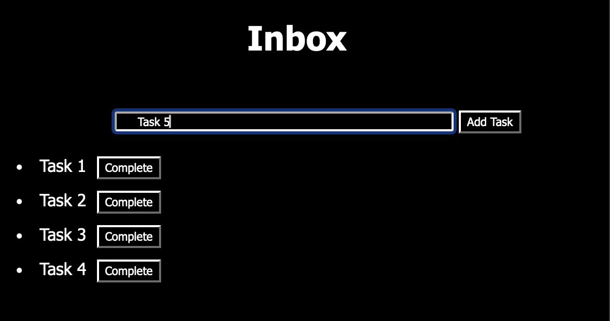

Writing Things Down.
WebTasks makes it effortless to write things down whenever you need, letting you feel on top of everything
Minimalism Supreme
WebTasks is a fully Chromium-based todo-list web application, taking up barely any space on your computer and very likely to not have problems loading or keeping your tasks safe.

No Junk, Only Progress
With only a single page, it's impossible for you to get overwhelmed with navigation, reducing time wasted searching rather than finishing up those tasks.
Basic Functionality
WebTasks uses the most basic todo-list features to keep tasks clean, simple and easy to follow. Features include:
- Task Input --------------------------- Type into box
- Add Task Button -------------------- Click button
- Bulleted Task Inbox
- Completed Task Button ------------ Appears next to added task, click to complete
- Edit Tasks ---------------------------- Right-click added task
- Reorder Tasks by Dragging ------- Drag and drop added task